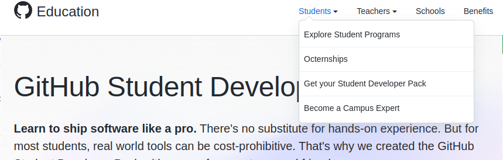

Assignment 1 - Fall 2023 - Due Friday, November 24th at 11:59pm
Under Development
Overview
"The power of the Web is in its universality. Access by everyone regardless of disability is an essential aspect." - Tim Berners-Lee, W3C Director and inventer of the World Wide Web. To accomplish this, the W3C has outlined accessibility standards as recommended best practices to follow.
You're going to research the W3C Web Accessibility Initiative(WAI) and create a webpage (detailed below). You will also register a domain name, generate an SSL certificate and add HTTPS to your Apache server configuration.
Specifications
- Pick and register a domain name using the GitHub Student Developer Pack. (5 marks)
- Generate an SSL certificate using Let's Encrypt and certbot. (5 marks)
- Configure your Apache server with HTTPS. (5 marks)
- Create a new webpage called accessibility.html
- Add a link to your new page in your website's navigation bar (on all affected pages - index.html, about.html). (1 mark)
- Add a comment with your name and student number. (1 mark)
- Add your updated navigation bar with your active class on the appropriate option. (2 marks)
- You should use the same stylesheet you've created in the labs.
- Implement any two of the WAI standards (that haven't already been met by following the lab instructions) into your website. (12 marks)
- On the new page, include a 250-500 word explaination about why the WAI standards are important and discuss the examples you used. (4 marks)
Accessing the GitHub Student Developer Pack
Login to GitHub Education to request access your Student Developer Pack. You will need to navigate to Students < Get your Student Developer Pack to request it.
Click on Explore More Offers. This comes with 80+ offers including $200 credit for Microsoft Azure, and three different offers to register a free or discounted domain name.
Registering a Domain name
Generating an SSL Certificate using Let's Encrypt and certbot
Configuring your Apache server with HTTPS
Submission
Your project should be submitted to your GitHub repository, and the following screenshots uploaded to the assignment dropbox by the due date in order to recieve marks. Late submissions will recieve a penalty of 10% per day.
- A screenshot showing your accessibility page on your server.
- A screenshot showing accessing your server using your domain name and HTTPS.